Объединить строку
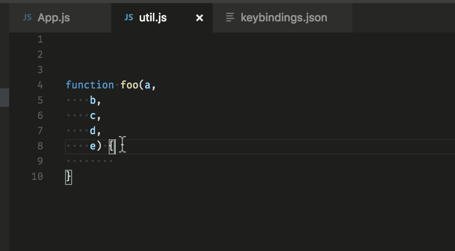- Mac — Ctrl+j
- Ubuntu, Windows: откройте существующие сочетания клавиш File -> Preferences -> Keyboard shortcuts и назначьте удобное сочетание для editor.action.join.
Форматирование кода
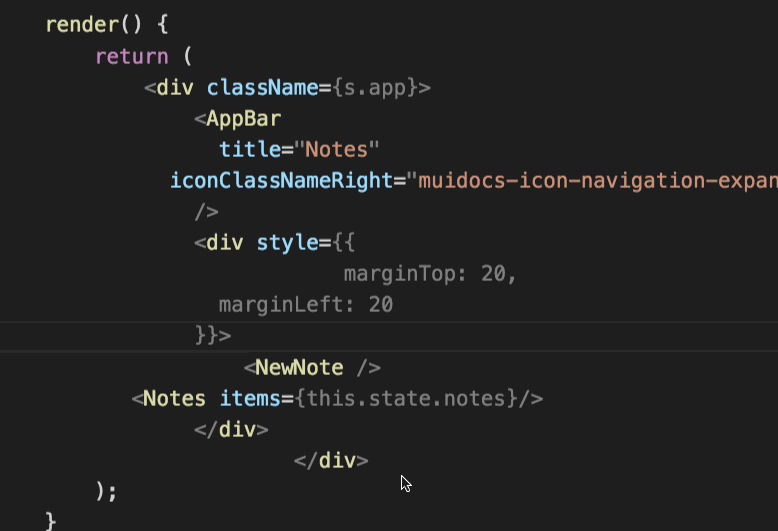Это сочетание помогает выровнять код в соответствии с заранее прописанными настройками редактора.
- Windows — Shift + Alt + F
- Mac — Shift + Option + F
- Ubuntu — Ctrl + Shift + I
Обрезка множественных пробелов
Данное сочетание клавиш помогает избавиться от лишних пробелов в начале или конце строки.
Совет: применяйте в самом конце, когда завершаете работу над кодом в текущем файле.
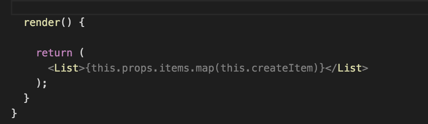Есть и альтернативный подход. Можно включить обрезку пробелов в самих настройках:
- Откройте пользовательские настройки (Preferences > Settings > вкладка User Settings).
- Кликните значок {} в верхней правой части окна. Это откроет документ.
- Добавьте новое правило «files.trimTrailingWhitespace«: true в документ User Settings (если его там еще нет). Таким образом вы не редактируете дефолтные настройки напрямую, а добавляете к ним новое правило.
- Сохраните файл User Settings.
Также мы добавили новую команду для запуска вручную (Trim Trailing Whitespace в палитре команд).
Если вы используете более новую версию VS Code, после открытия пользовательских настроек вы увидите следующее окно (поставьте галочку, как показано):
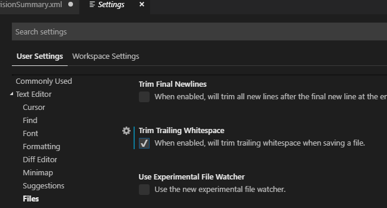Сворачивание блоков кода
Иногда, если размер файла велик или если вы просто хотите понять код в целом, без подробностей, вам пригодится функция сворачивания блоков кода.
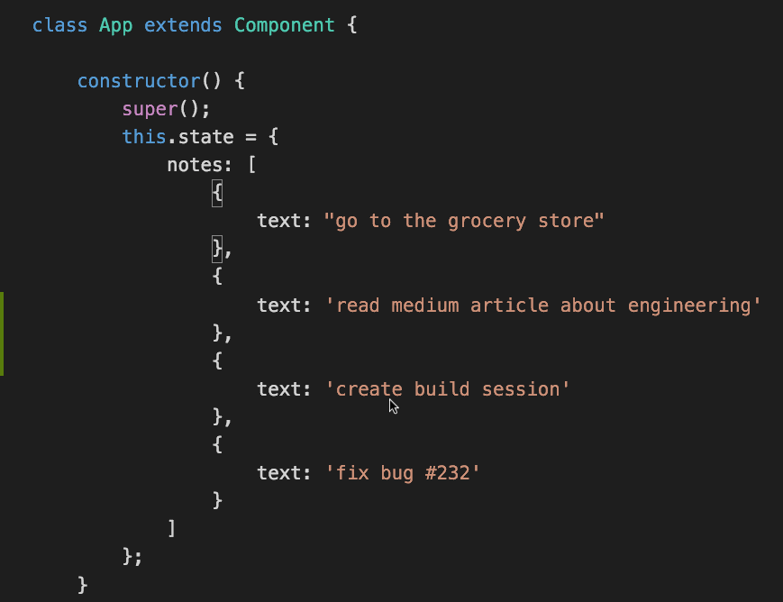Свернуть внутреннюю область возле курсора вам помогут следующие сочетания клавиш:
- Windows /Ubuntu — Ctrl + Shift + [
- Mac — Command+ Option + [
Чтобы развернуть, применяйте те же сочетания, но с закрывающей квадратной скобкой:
- Windows /Ubuntu — Ctrl + Shift + ]
- Mac — Command+ Option + ]
Скопировать строку сверху или снизу
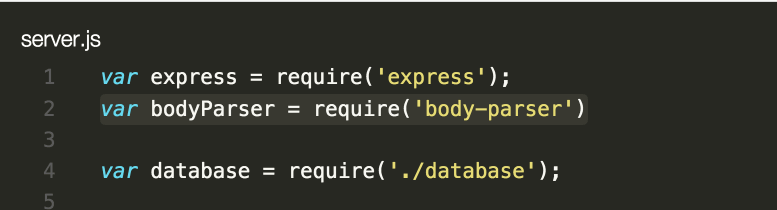- Windows — Shift + Alt + стрелка вверх / вниз
- Mac — Shift + Option + стрелка вверх / вниз
- Ubuntu — Ctrl + Shift + Alt + стрелка вверх / вниз
Назначенные сочетания можно посмотреть и отредактировать, пройдя по пути File > Preferences > Keyboard Shortcuts.
Разбить окно редактора по вертикали
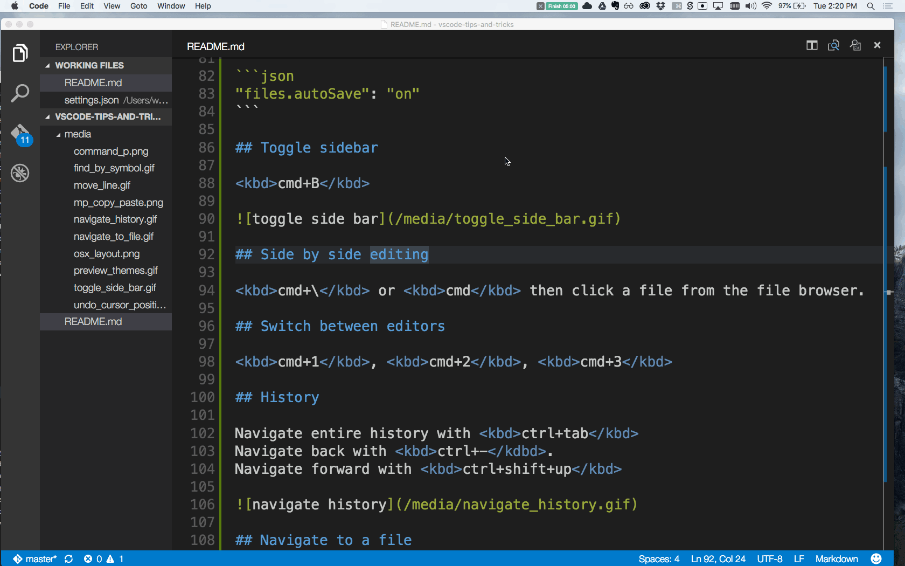- Windows — Shift + Alt + \ или 2,3,4
- Mac — Command + \ или 2,3,4
- Ubuntu — Shift + Alt + \ или 2,3,4
Чтобы разбить окно редактора, можно воспользоваться командой split editor. Оригинальное сочетание клавиш для разделения окна — 123. Функция разделения полезна для параллельного редактирования файлов.
Назначенные сочетания также можно отредактировать, выбрав новые по своему вкусу (File > Preferences > Keyboard Shortcuts).
Окно редактора в виде сетки
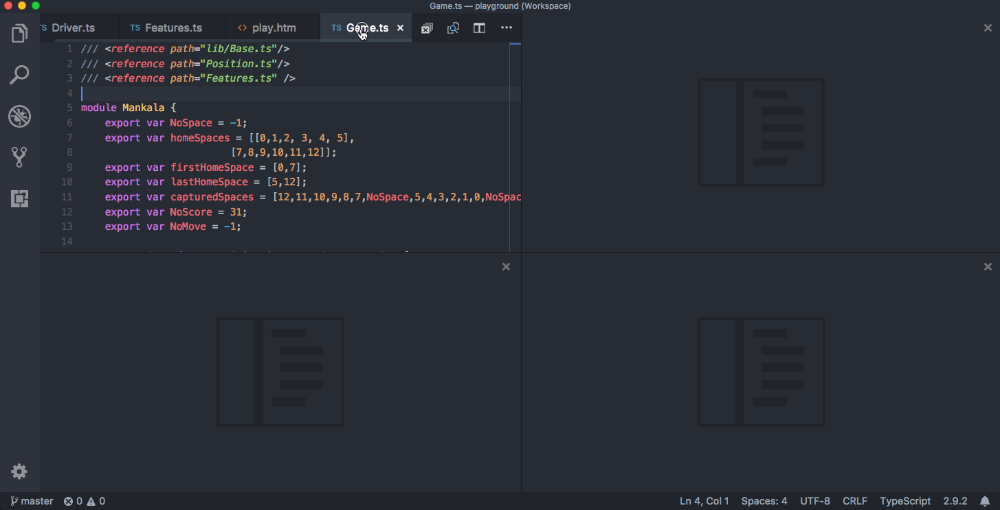По умолчанию группы редактора располагаются в вертикальных столбцах (например, когда вы разбиваете окно, чтобы открыть параллельно два файла). Но вы можете с легкостью расположить группы так, как вам больше нравится (хоть вертикально, хоть горизонтально).
Для поддержки гибких макетов можно создать пустые группы редактора. По умолчанию закрытие последнего редактора группы закрывает и саму группу, но это поведение можно изменить, добавив в настройках workbench.editor.closeEmptyGroups: false.
В меню View > Editor Layout можно посмотреть набор готовых вариантов разделения окна.
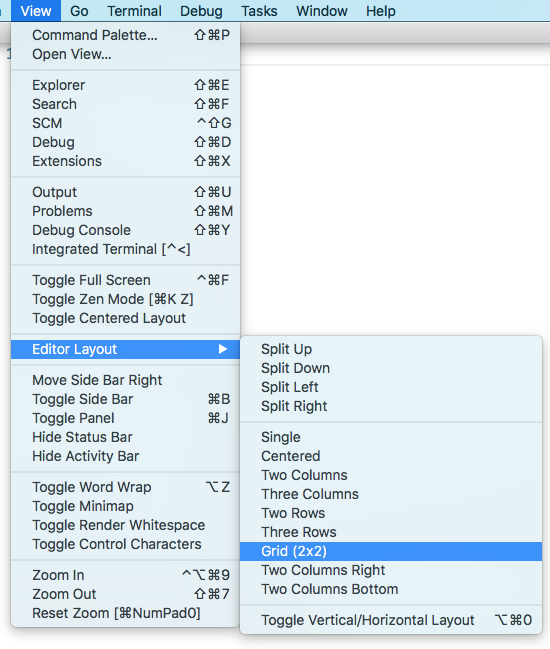Выделить слово
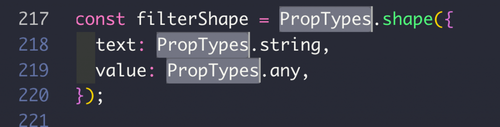- Windows, Ubuntu — Ctrl+ d
- Mac — Command + d
Если нажать command + d больше одного раза, к выделению добавится еще одно вхождение того же слова далее по тексту.
Открыть или закрыть боковую панель
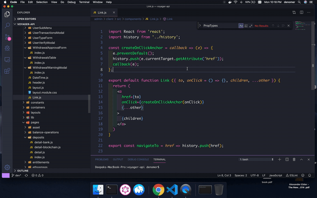- Windows, Ubuntu — Ctrl+ b
- Mac — Command + b
Иногда очень пригождается возможность закрыть боковую панель, например, если у файла слишком большая ширина или если хотите разбить окно и открыть одновременно два файла.
Переход к указанной строке
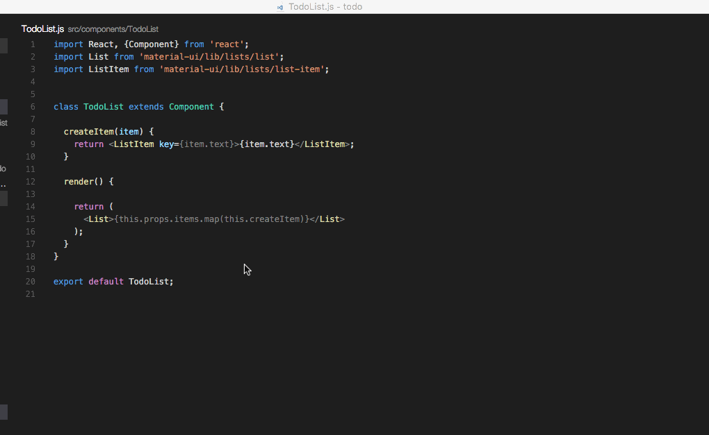Примечание: чтобы перейти к нужной строке в файле, используйте сочетание клавиш ctrl + g, после которого введите номер строки. Или же сначала откройте меню файла при помощи command + p, затем введите двоеточие и номер нужной строки.
- Windows, Ubuntu — Ctrl + g
- Mac — Ctrl + g или Ctrl + p
Переход к символу в файле
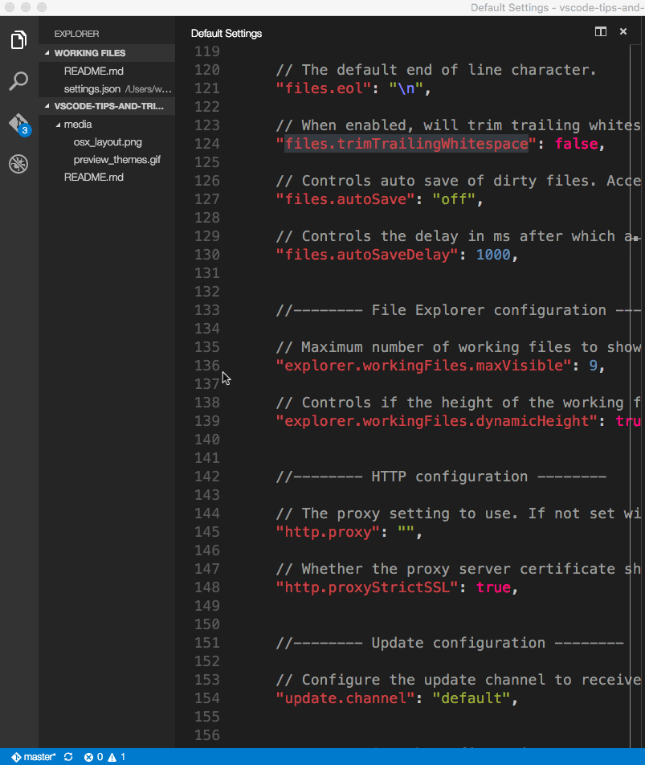- Windows, Ubuntu — Ctrl + Shift + o
- Mac — Command + Shift+ o
Символы можно группировать, добавив двоеточие:
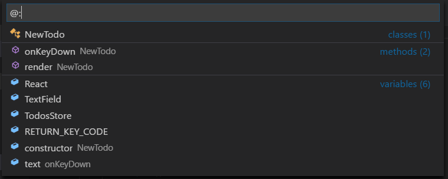Переход к символу в рабочем окружении
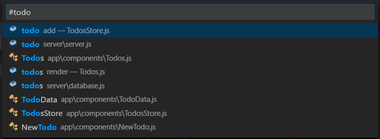- Windows, Ubuntu — Ctrl + t
- Mac — Command + t
Удаление предыдущего слова
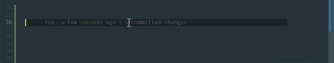- Windows, Ubuntu — Ctrl + backspace
- Mac — Command + delete
Полезно в ситуациях, если набрали лишнее, а жать несколько раз backspace не любите.
Выделение целых слов
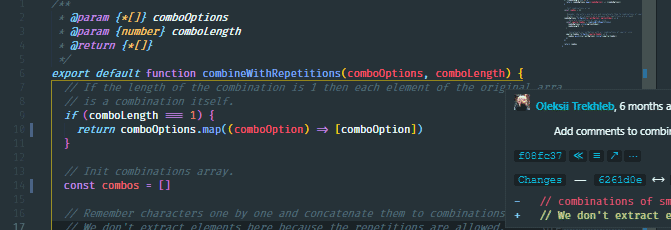- Windows, Ubuntu — Ctrl + Shift + стрелка вправо / влево
- Mac — Command + Shift + стрелка вправо / влево
Очень полезно для более быстрого выделения и редактирования.
Дублирование строки
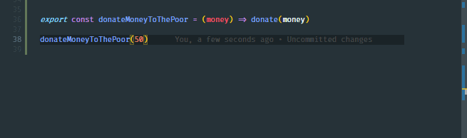- Windows, Ubuntu — Ctrl + Shift + d
- Mac — Command + Shift +d
Дублирование строк это очень полезный и хорошо известный функционал.
Удаление строки
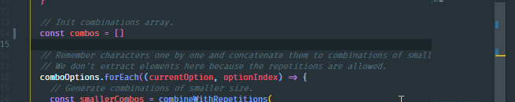- Windows, Ubuntu — Ctrl + x
- Mac — Command + x
Добавление курсора сверху / снизу
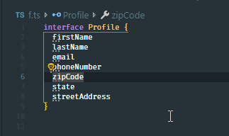- Windows, Ubuntu — Ctrl + Alt + стрелка вверх / вниз
- Mac — Command + Alt + стрелка вверх / вниз
Функция дублирования курсоров в VS Code, пожалуй, сэкономит вам больше всего времени.
Переименование символа
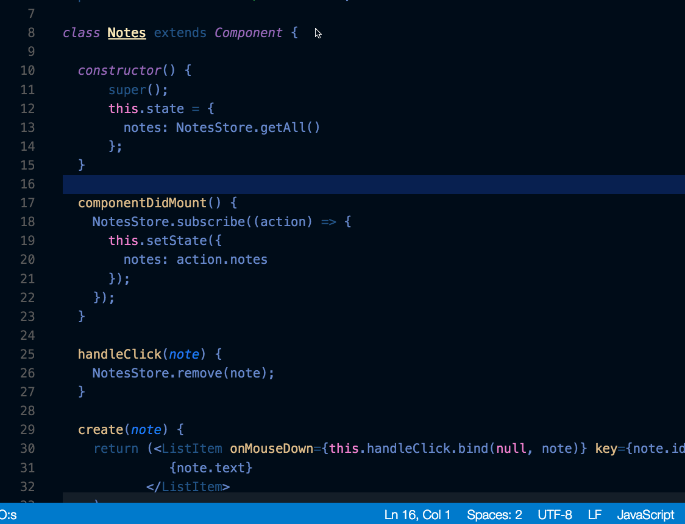- Windows, Mac, Ubuntu — F2.
Выделите нужный символ, а затем нажмите f2. Также можно использовать контекстное меню.
Выделение столбца
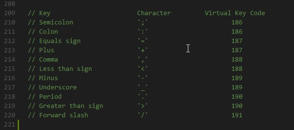- Windows, Ubuntu — Shift + Alt
- Mac — Shift + Option
При помощи этих сочетаний клавиш и движения мыши можно выделять блоки текста. В конце каждой выделенной строки будет добавлен курсор.
Палитра команд
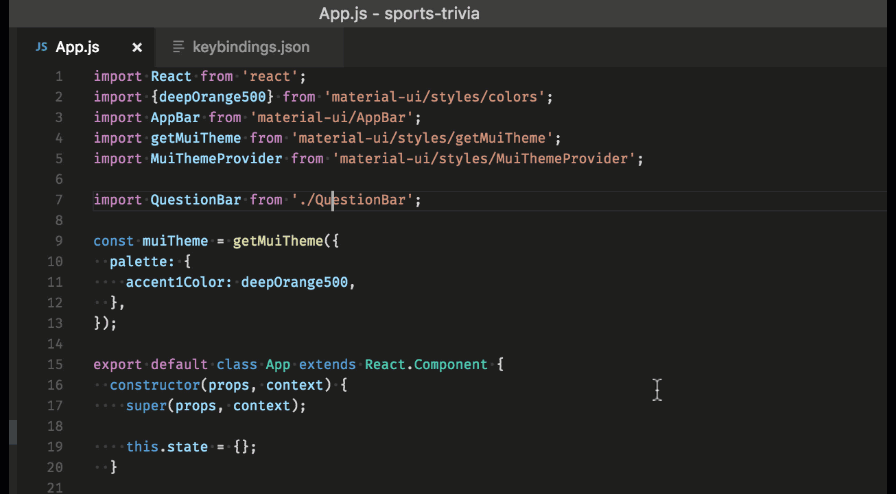- Windows, Ubuntu — Ctrl + p
- Mac — Command + p
При помощи этих сочетаний клавиш можно получить доступ ко всем доступным в вашем контексте командам. Вот самые используемые из них:
-
1. Открыть файл
Чтобы перейти к определенному файлу, введите сочетание клавиш для открытия палитры команд, а затем начните вводить название искомого файла. Это позволит быстро найти нужный файл.
-
Посмотреть сочетание клавиш для команды
Все команды в палитре команд приводятся с назначенными им сочетаниями клавиш (если такие назначения есть). Поэтому, забыв нужное сочетание, можно подсмотреть его в палитре.
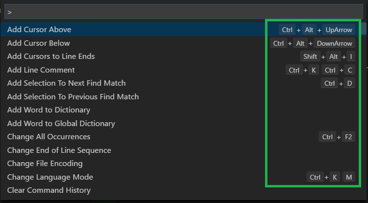Полезных сочетаний клавиш в VS Code очень много. При желании можно ознакомиться с ними подробнее: